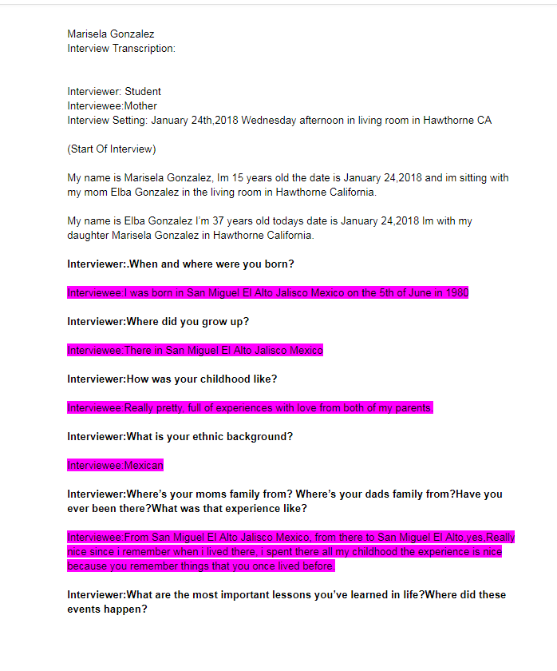
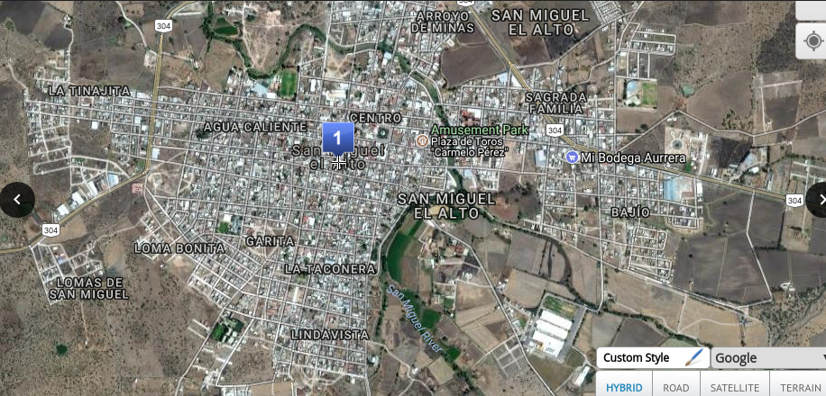

World History
These are my projects I've done for World History
For this class, these are my projects first my projects which is the interview I had with my interviewee.Then some images of a map which are the places that my interviewee mentioned, and at last I have my interviewee's and my audio.
|
Feel free to inspect my work under here My interview document and interviewee's, click on it too see it larger ⇩ Map, click on it too see it larger ⇩ ⇩ Interview AudioIndustrial revolution So for this class we had a project due to the Industrial Revolution, for this project we were put into groups, for there each group got a manifacture that was invented or created. For my group we got the sewing machine and this is my group's and my work that connects to our sewing machine. Sewing Machine sketch ⇩ Sewing Machine 3D model ⇩ Sewing Machine Slide Presentation ⇩ |